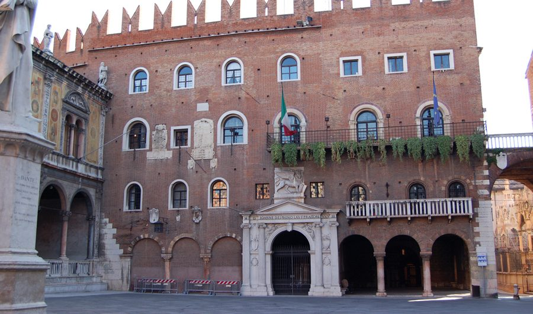
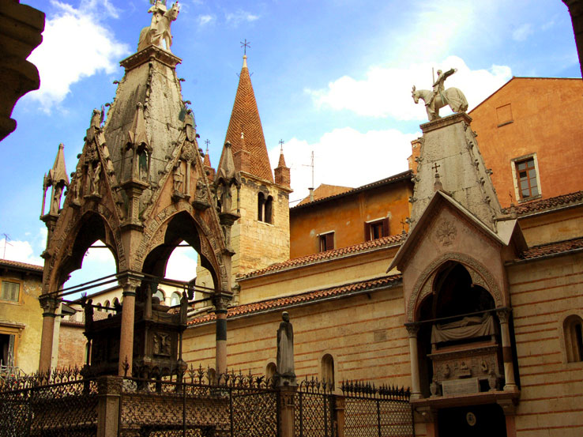
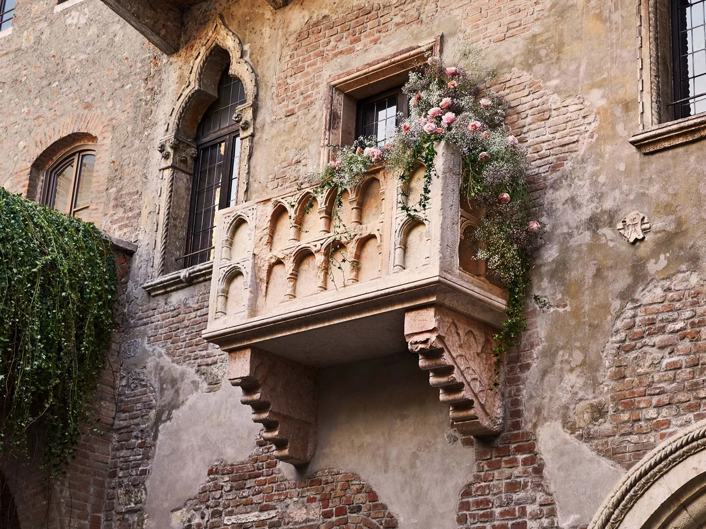

PALAZZO SCALIGERI
Verona, città veneta che ha conosciuto l’intervento Romano e celebre nel mondo per essere stata adottata da Shakespeare come cornice della tragedia “Romeo e Giulietta”, è stata citata da Dante nella Commedia in quanto il signore della città Cangrande della Scala ospitò numerose figure di spicco presso la sua dimora tra cui Boccaccio, Petrarca, Giotto e lo stesso Dante. Il palazzo Scaligeri venne costruito intorno al 1200 sopra le rovine di un foro romano e il primo ad insediarsi fu Alberto I alla fine del secolo; l’edificio inoltre conobbe un ruolo di rilievo nella Repubblica Serenissima come palazzo delle magistrature. Attualmente è sede della Prefettura, ma si pensa ad un piano di riqualificazione dell’edificio come museo dedicato alla famiglia da Scala.
Nei pressi del Palazzo si trovano le arche Scaligere, un complesso funerario in stile gotico dell’omonima famiglia che contiene le tombe di Cangrande, Mastino II e Cansignorio.


JULIET'S HOUSE
Before talking about Juliet’s balcony we must make a clarification: Shakespeare used to set his poems in worlds that were on the border of truth and fiction. “Romeo and Juliet” was inspired by Arthur Brooke's poem, thus “The Tragicall Historye of Romeus and Juliet'', which was published in 1562. Brooke’s version was inspired by older works by Italian writers, including Luigi de Porto and Matteo Bandello, who told the story of Romeo and Juliet and the deadly feud between the families Montecchi and Cappelletti.
These names are also mentioned in a verse of Dante’s Purgatory, published in the mid-1300s, though his poem includes nothing about star-crossed lovers.

The house was once inhabited by the Cappello family (a name similar to the Italian version’s Cappelletti) and dates back to the 13th century, though the famous balcony wasn’t added until the 20th century.
Whatever, you’ll always find big crowds of people from all over the world who come here to live the fantasy, because most of this house is fiction but people’s emotions are real.